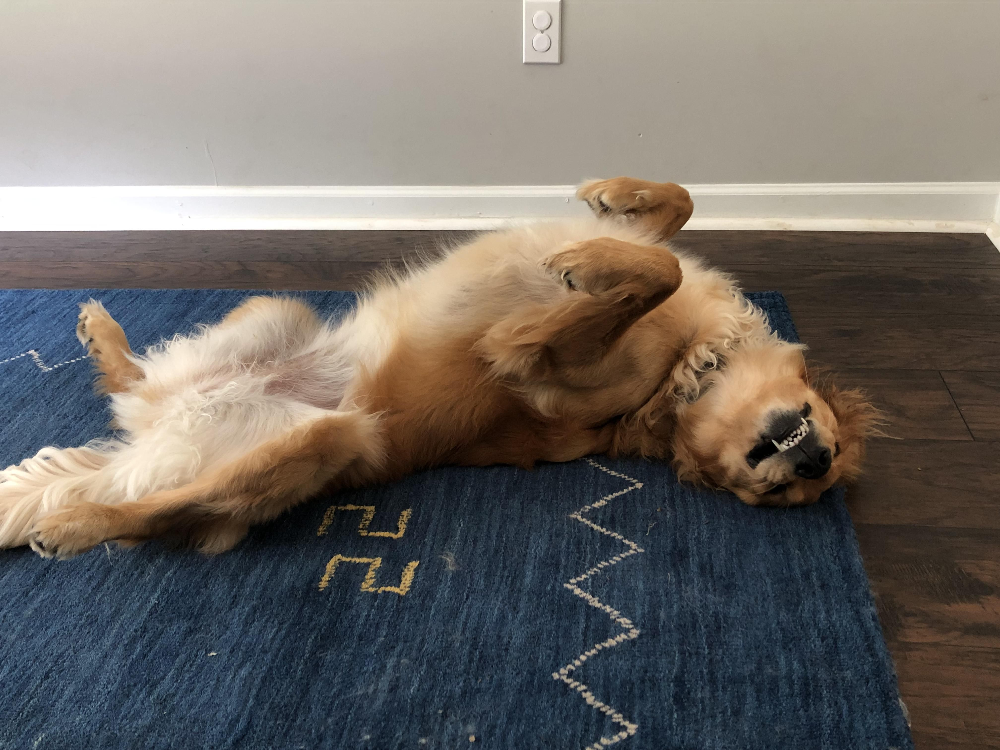
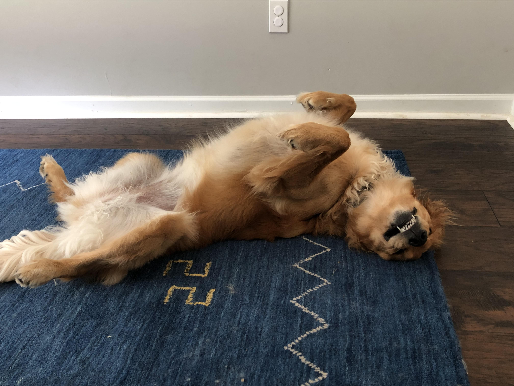
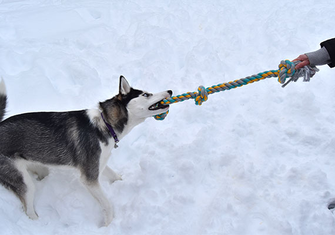
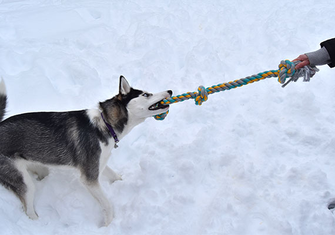
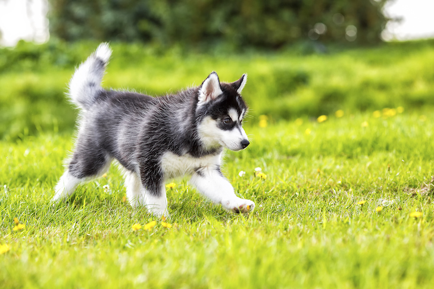
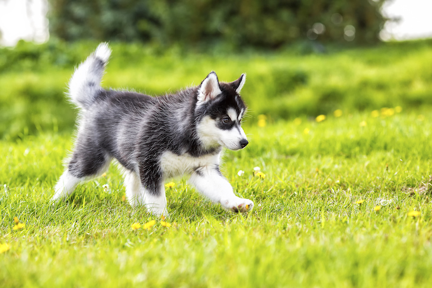

Koda
Meet Koda, a lively 6-year-old German Shepard known for his playful energy and intelligent eyes. With a deep loyalty to his family and an adventurous spirit, Koda's favorite activities include long hikes, playing fetch in the park, and unwinding with his favorite chew toy. Regarded as a beloved family member, he holds a special fondness for cheese treats and belly rubs. Koda's unwavering loyalty, protective nature, and playful demeanor make him an indispensable part of his family's life.
Photo Gallery

Likes
- Long hikes
- Playing ftech in the park
- Cheese treats
Rocky
Meet Rocky, a loveable 6-year-old Bernese Mountain Dog. With his lush, tri-colored coat and kind eyes, Rocky's striking appearance is matched only by his gentle and placid nature. Despite his large size, Rocky is known for his easy-going temperament and playful habits which include chasing after squirrels, engaging in catch games with balls and gentle strolls around the university park. Post his fun-filled day, he enjoys sprawled out peaceful naps in the sun and often seen curling up by the fireplace with his favorite squeaky toy. Rocky's calm demeanour combined with his natural charm makes him an irresistible companion in any household.
Photo Gallery

Likes
- Chasing small animals
- Play catch games
- Sleeping with his favorite toys
Daisy

Meet Daisy, a lovable 4-year-old Golden Retriever who calls Germany her home. Daisy's world centers around two things: her love for swimming and her soft spot for belly rubs. With an endearing personality and boundless energy, she is often seen frolicking in local streams, giving her plush coat a shiny wet look. Back at home, Daisy's idea of a perfect evening is cuddling up with her family, enjoying her favorite chicken treats, and receiving plenty of strokes on her silky fur. Daisy's affectionate nature and playful charm never fail to spread joy and laughter to those around her.
Photo Gallery
 

Likes
- Swimming
- Bellly rubs
- Chicken treats
Max
Meet Max, a spirited 3-year-old Border Collie. Blessed with intelligence and agility intrinsic to his breed, Max spends his days mastering commands and playing intricate fetch games, often with his beloved frisbee. His energy extends beyond playtime as he loves going for long, explorative walks around the University's green spaces. After an active day, Max shows his loving nature by curling up at the foot of his owner's bed, proving that he's not just an extraordinary herder, but also a loyal and comforting companion.
Photo Gallery


Likes
- Cuddling with his family
- Long walks
- Chasing sheeps
Spot

Meet Spot, a spirited and affectionate 4-year-old Beagle. Renowned for his energetic personality and keen sense of smell, Spot revels in exploring the university grounds and solving complex puzzle toys, channeling the breed's characteristic intelligence. His adventurous spirit shines during the day, as he energetically chases tennis balls and joyfully tangles with squirrels. Spot's evenings, however, are equally exciting, as he often winds down with a bacon-flavored biscuit, his favorite, at the local dog café. With his loyal and cheerful nature, Spot spreads joy wherever he goes, a testament to his undying love for his human companions.
Photo Gallery
Likes
- Chasing squirrels
- Playing games of fetch
- Unwinding with puzzle toys
Baloo
Meet Baloo, a charming 5-year-old Labrador Retriever. Known for his gentle personality and quick learning, Baloo is a master at responding to commands and making friends. His daily activities often involve taking refreshing dips in the nearby river and romping around the verdant fields. Staying true to his breed's love for activity, Baloo is also proficient at fetching, with a penchant for brightly colored Frisbees. To top off an adventurous day, he loves lounging by the fireplace as he gnaws on his favorite chicken-flavored chew bone. A classic Labrador trait, Baloo's kind hearted and friendly nature, uplifts spirits and makes him an endearing companion to all.
Photo Gallery


Likes
- Swimming in the river
- Chasing frisbees
- Relaxing by the fireplace
Luna
Meet Luna, a vivacious 2-year-old Siberian Husky. Renowned for her striking blue eyes and robust energy, Luna thrives in the colder months, often making the university's campus her personal playground. An innate sled-pulling history equips Luna with an exceptional zest for life; her daily activities include rigorous sprints, playful games of tug, and adventures in the snow. In contrast to her lively daytime routine, Luna unwinds by cosying up with her humans, showcasing her affectionate and friendly side, a trait that's undeniably Siberian Husky.
Photo Gallery
 

 

Likes
- Playing in the snow
- Playing games of tug
- Cozying up with her family